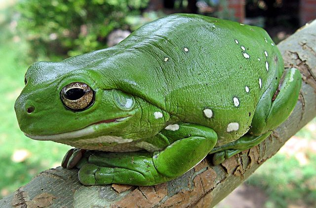

Frog 5 of 30 · page 1 of 3
Australian green tree frog
Pelodryas caerulea

A large green tree frog with a rounded head, often found near houses and other human dwellings. It is also called White's tree frog or the dumpy tree frog.
- Family
- Pelodryadidae
- Genus
- Pelodryas
- Conservation status
- Least Concern (IUCN Red List)
- Range
- Australia and New Guinea; introduced in the United States and New Zealand.
Facts from the Wikipedia article on Australian green tree frog ↗, retrieved 23 November 2026.